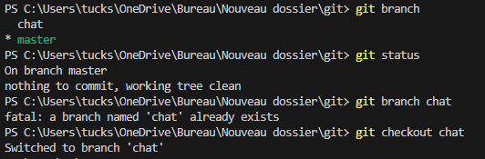

C’est Quoi Git ?
Remercions le célèbre développeur de logiciel Linus Torvalds pour Git, le logiciel qui fait tourner le coeur de GitHub. (Et tant que vous y êtes, remercions-le aussi pour le système d’exploitation Linux). Git est un logiciel de contrôle de version, ce qui signifie qu’il gère les modifications d’un projet sans écraser n’importe quelle partie du projet. Et il ne risque pas de disparaître, tout particulièrement parce que Torvalds et ses collègues développeurs du noyau utilisent Git pour aider à développer le noyau coeur de Linux.
Pourquoi utiliser quelque chose comme Git ? Supposons que vous mettiez à jour avec un collègue des pages sur le même site web. Vous faites des modifications, vous les sauvegardez et les versez sur le site. À ce stade, tout va bien. Le problème survient quand votre collègue travaille sur la même page que vous en même temps. L’un de vous va voir son travail écrasé.
Une application de contrôle de version comme Git empêche ça d’arriver. Vous et votre collègue pouvez chacun de votre côté verser vos révisions sur la même page, et Git sauvegardera deux copies. Plus tard, vous pourrez fusionner vos modifications sans perdre le travail dans le processus. Vous pouvez même revenir en arrière à tout moment, parce que Git conserve une « copie instantanée » de tous les changements produits.
Le problème avec Git est qu’il est vieux. Si vieux que nous devons utiliser la ligne de commande -ou l’application Terminal si vous êtes sur Mac - afin d’y accéder, et y taper dedans des bouts de code comme les hackers des années 90. Ceci peut être une proposition difficile pour les utilisateurs d’ordinateurs modernes. C’est là où Github entre dans la danse.
GitHub facilite l’utilisation de Git sur deux points. Premièrement, si vous téléchargez le logiciel GitHub sur votre ordinateur, GitHub fournit une interface visuelle pour vous aider à gérer localement vos projets avec les contrôles de version. Deuxièmement, créer un compte sur GitHub.com apporte les contrôles de versions à vos projets web, et leur confère des fonctionnalités de réseaux sociaux.
Vous pouvez parcourir les projets d’autres utilisateurs de Github, et même y télécharger des copies pour vous-même afin de les modifier, apprendre ou les enrichir. D’autres utilisateurs peuvent faire la même chose avec vos projets publics, repérer vos erreurs et suggérer des corrections. De toute façon, aucune donnée ne se perd parce que Git enregistre un “instantané” de chaque modification
Bien qu’il soit possible d’utiliser GitHub sans apprendre Git, il y a une énorme différence entre l’utilisation et la compréhension. Avant de connaître Git, je savais utiliser GitHub, mais je ne comprenais pas vraiment pourquoi. Dans ce tutoriel, nous allons apprendre à utiliser Git à la ligne de commande.
Vocabulaire
Dans ce tutoriel, il y a quelques mots que j’utiliserai à plusieurs reprises, aucun d’eux dont je n’avais entendu parler avant d’avoir démarré l’apprentissage. Voici les plus connus :
Ligne de Commande : Le programme de l’ordinateur que nous utilisons pour entrer des commandes Git. Sur un Mac, ça s’appelle Terminal. Sur un PC, c’est un programme non-natif que vous téléchargez lorsque vous téléchargez Git pour la première fois (nous allon faire ça dans la section suivante). Dans les deux cas, vous tapez à l’écran des commandes à base de texte, appelées invites de commande, au lieu d’utiliser une souris.
Dépôt : Un répertoire ou de l’espace de stockage où vos projets peuvent vivre. Parfois les utilisateurs GitHub raccourcissent ça en « repo ». Il peut être local sur un répertoire de votre ordinateur, ou ce peut être un espace de stockage sur GitHub ou un autre hébergeur en ligne. À l’intérieur d’un dépôt, Vous pouvez conserver des fichiers de code, des fichiers texte, des images.
Contrôle de Version : Fondamentalement, l’objectif pour lequel Git a été conçu. Quand vous avez un fichier Microsoft Word, vous l’écrasez à chaque fois que vous faites une nouvelle sauvegarde, ou vous sauvegardez plusieurs versions. Avec Git, vous n’êtes plus obligé de faire ça. Git conserve des « instantanés » de chaque point dans l’historique d’un projet, de sorte que vous ne pouvez jamais le perdre ou l’écraser.
Commit :C’est la commande qui donne à Git toute sa puissance. Quand vous « committez », vous prenez un « instantané », une « photo » de votre dépôt à ce stade, vous donnant un point de contrôle que vous pouvez ensuite réévaluer ou restaurer votre projet à un état précédent.
Branche : Comment faire travailler plusieurs personnes sur un projet en même temps sans que Git ne s’embrouille ? Habituellement, elles se « débranchent » du projet principal avec leurs propres versions complètes des modifications qu’elles ont chacune produites de leur côté. Après avoir terminé, il est temps de « fusionner » cette branche pour la ramener vers la branche « master », le répertoire principal du projet.
Commandes Spécifiques Git
Le fait que Git ait été conçu avec un grand projet comme Linux, il existe beaucoup de commandes Git. Toutefois, pour utiliser les bases de Git, vous aurez seulemenet besoin de connaître quelques termes. Ils commencent tous de la même façon avec le mot « git ».
- git init: Initialise un nouveau dépôt Git. Jusqu’à ce que vous exécutiez cette commande dans un dépôt ou répertoire, c’est juste un dossier ordinaire. Seulement après avoir entré cette commande, il accepte les commandes Git qui suivent.
- git config: Raccourci de “configurer,” ceci est tout particulièrement utile quand vous paramétrez Git pour la première fois.
- git help : Oublié une commande ? Tapez-ça dans la ligne de commande pour afficher les 21 commandes les plus courantes de Git. Vous pouvez aussi être plus spécifique et saisir “git help init” ou tout autre terme pour voir comment utiliser et configurer une commande spécifique git.
- git status : Vérifie le statut de votre repository. Voir quels fichiers sont à l’intérieur, quelles sont les modifications à commiter, et sur quelle branche du repository vous êtes en train de travailler.
- git add : Ceci n’ajoute pas de nouveaux fichiers dans votre repository. Au lieu de cela, ceci porte de nouveaux fichiers à l’attention de Git. Après avoir ajouté des fichiers, ils sont inclus dans les « instantanés » du dépôt Git. git add nom_du_fichier (Ajoute un fichier spécifique) git add .(Ajoute tous les fichiers modifiés dans le dossier actuel)
- git commit : la commande la plus importante de Git. Après avoir effectué toute sorte de modification, vous entrez ça afin de prendre un “instantané” du dépôt. Généralement cela s’écrit sous la forme git commit -m “Message ici“. Le -m indique que la section suivante de la commande devrait être lue comme un message.
- git branch : Vous travaillez avec plusieurs collaborateurs et vous voulez produire des modifications de votre côté ? Cette commande vous permet de construire une nouvelle branche, ou une chronologie des commits, des modifications et des ajouts de fichiers qui sont complètement les vôtres. Votre titre va après la commande. Si vous vouliez créer une nouvelle branche appelée « chats », vous saisiriez git branch chats ou git branch les_chats.
- git chekout : Permet littéralement de vérifier un dépôt dans lequel vous n’êtes pas. C’est une commande de navigation qui vous permet de vous déplacer vers le répertoire que vous voulez vérifier. Vous pouvez utiliser cette commande sous la forme git checkout master pour regarder la branche master, ou git checkout chats pour regarder une autre branche.
- git merge : Lorsque vous avez fini de travailler sur une branche, vous pouvez fusionner vos modifications vers la branche master, qui est visible pour tous les collaborateurs. git merge chats prendrait toutes les modifications que vous avez apportées à la branche “chats” et les ajoutera à la branche master.
- git push : Si vous travaillez sur votre ordinateur local, et voulez que vos commits soient visibles aussi en ligne sur Github, vous « push »ez les modifications vers Github avec cette commande.
- git pull : Si vous travaillez sur votre ordinateur local, et que vous voulez la version la plus à jour de votre repository pour travailler dessus, vous “pull”ez (tirez) les modifications provenant de Github avec cette commande.
Exemple :
Conclusion
Git et GitHub facilitent la gestion collaborative des projets. Bien qu'il soit possible de les utiliser sans connaître Git, la compréhension de ses commandes de base est essentielle pour les utilisateurs avancés.